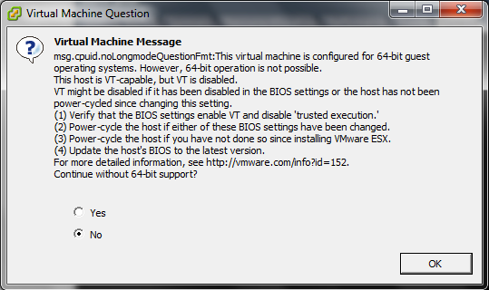
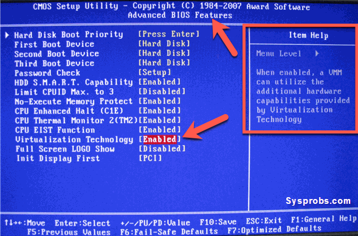
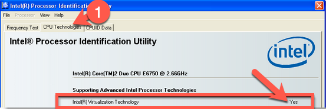
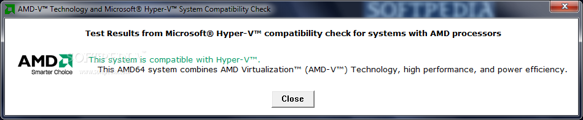

Enabling Virtualization Technology Extensions (VTx) in Intel and AMD BIOS
On Intel and AMD systems, there is a BIOS extension that must be enabled or you will not be able to boot your class VM(s) in VMware.
Upon starting your class virtual machine(s), you may encounter a dialog similar to the one below. Starting the virtual machine without 64-bit support will result in a non-functional VM.

To correct this, take the following steps.
Enabling VTx for Class
- Enter your system's BIOS configuration menus. This requires pressing a designated key immediately upon booting/rebooting your system, but the exact key depends on the system and BIOS manufacturers. Most systems use one of the following five keys:
- F1
- F2
- DEL
- ESC
- F10
- Older computers may require multiple keys to be pressed simultaneously, or keys other than those listed above:
- CTRL+ALT+ESC
- CTRL+ALT+INS
- CTRL+ALT+ENTER
- CTRL+ALT+S
- PGUP
- PGDN
-
Identify the BIOS menu that controls the VTx settings. This is also dependent on the specific version of BIOS that your system uses. The screenshots below represent the Award BIOS, but you may need to explore the various BIOS menus on your system to find the proper menu and setting. Different BIOS versions also have varying keyboard controls - some use the space bar to change settings, others use the PGUP and PGDN keys, etc.

Saving the settings may require pressing F10 or other keys or menu sequences.
-
Exit the BIOS settings and reboot the system. Ideally, keep the power off for approximately one minute before powering it on to clear any residual configuration settings. The reboot is critical, as the BIOS settings are essentially a configuration file that is only read at boot time.
Verifying That VTx Settings are Correct
There are several ways to verify that the VTx settings above have been set correctly.
- Boot your class VM(s) to ensure the VTx error at the beginning of this document is not displayed.
-
For Intel processors, you may download the Intel Processor Identification Utility. Run the utility and click the
CPU Technologiestab to confirm if VTx is enabled or not.
-
For AMD processors, you may download the AMD Virtualization Technology and Microsoft Hyper-V System Compatibility Check Utility. Run the utility to confirm if VTx is enabled or not.

-
For both Intel and AMD processors, you may download Microsoft's Hardware-Assisted Virtualization Detection Tool. Run the utility to confirm if VTx is enabled or not.